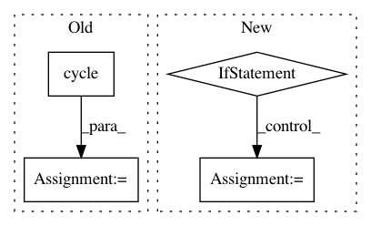

23dffb96ac95827a3af89f6ff027d254284ba93c,onmt/inputters/inputter.py,DatasetLazyIter,__iter__,#DatasetLazyIter#,528
Before Change
self.is_train = is_train
def __iter__(self):
paths = cycle(self._paths) if self.is_train else self._paths
for path in paths:
cur_dataset = torch.load(path)
logger.info("Loading dataset from %s, number of examples: %d" %
(path, len(cur_dataset)))
cur_dataset.fields = self.fields
cur_iter = OrderedIterator(
dataset=cur_dataset,
batch_size=self.batch_size,
batch_size_fn=self.batch_size_fn,
device=self.device,
train=self.is_train,
sort=False,
sort_within_batch=True,
repeat=False
)
for batch in cur_iter:
yield batch
cur_dataset.examples = None
gc.collect()
del cur_dataset
gc.collect()
def max_tok_len(new, count, sofar):
In token batching scheme, the number of sequences is limited
such that the total number of src/tgt tokens (including padding)
After Change
for batch in self._iter_dataset(path):
yield batch
num_batches += 1
if self.is_train and not self.repeat and \
num_batches % self.num_batches_multiple != 0:
// When the dataset is not repeated, we might need to ensure that
// the number of returned batches is the multiple of a given value.
// This is important for multi GPU training to ensure that all
// workers have the same number of batches to process.
for path in paths:
for batch in self._iter_dataset(path):
yield batch
num_batches += 1
if num_batches % self.num_batches_multiple == 0:
return
def max_tok_len(new, count, sofar):
In token batching scheme, the number of sequences is limited
such that the total number of src/tgt tokens (including padding)
In pattern: SUPERPATTERN
Frequency: 3
Non-data size: 4
Instances
Project Name: OpenNMT/OpenNMT-py
Commit Name: 23dffb96ac95827a3af89f6ff027d254284ba93c
Time: 2019-02-08
Author: guillaumekln@users.noreply.github.com
File Name: onmt/inputters/inputter.py
Class Name: DatasetLazyIter
Method Name: __iter__
Project Name: rasbt/mlxtend
Commit Name: 12e0eb943cca24ae0c5f21e9bd51a0bff83f96ed
Time: 2015-03-09
Author: se.raschka@me.com
File Name: mlxtend/matplotlib/decision_regions.py
Class Name:
Method Name: plot_decision_regions
Project Name: UFAL-DSG/tgen
Commit Name: a886baab6b48d976f0b30addde5e588282de072f
Time: 2016-05-17
Author: odusek@ufal.mff.cuni.cz
File Name: util/select_pairs_for_ab.py
Class Name:
Method Name: main